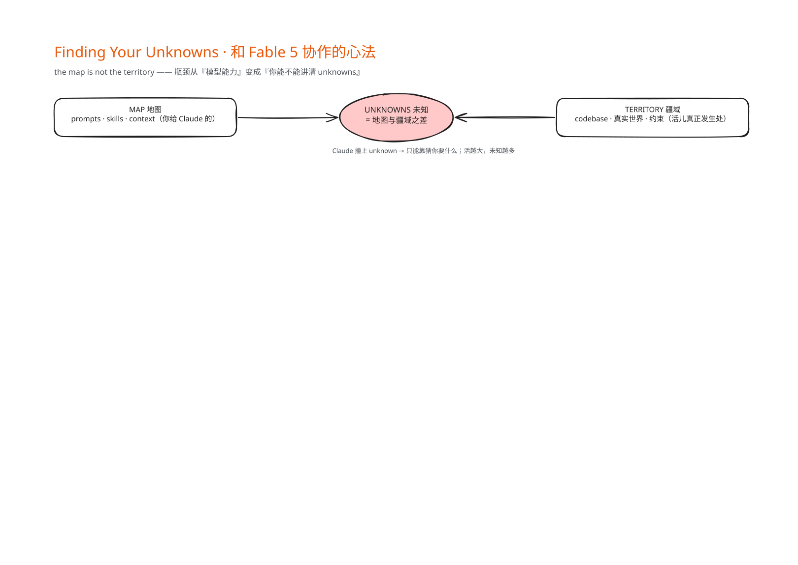
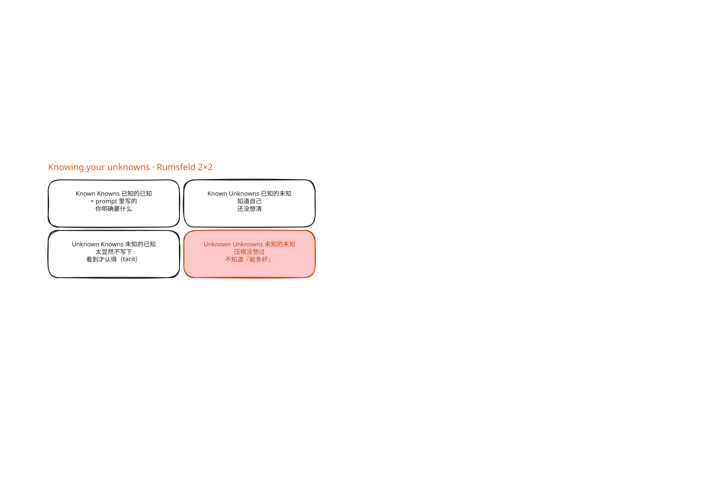
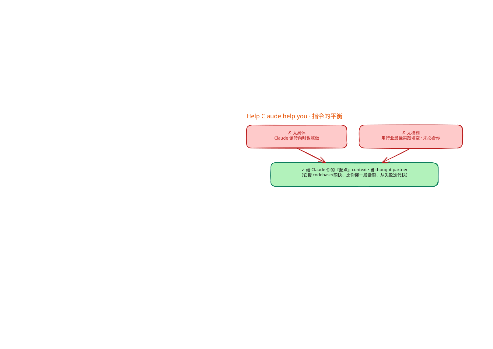
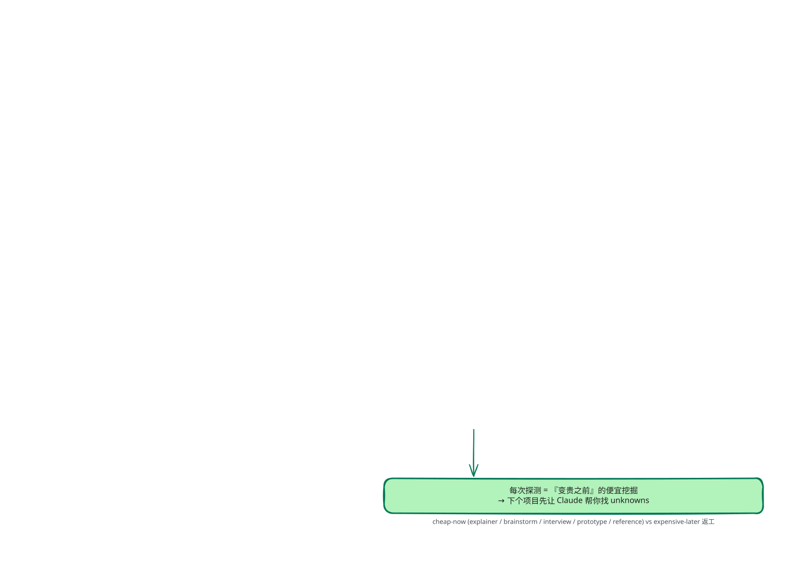

精读AI_
先看时间轴最左边，实现之前，五招。
每一招你都要留意它冲着哪一格未知去——这是心法，别听成一堆零散 tips。
第一招，盲点扫描，Blind Spot Pass，冲着最难缠的那一格、未知的未知。
什么时候用？
你要在 codebase 一个从没碰过的新区域写功能，或者干一件完全不熟的活，身上一定挂着一堆未知的未知——不知道该问什么、不知道「好」长什么样、不知道有哪些坑。
做法很简单：让 Claude 帮你做一次盲点扫描，把这些未知找出来、讲给你听。
这里有个反复出现的要点：一定要给它「你是谁、你懂什么」的 context，它才知道你的盲点在哪。
第二招，头脑风暴和原型，冲着第三格那种「看到才知道」的标准。
作者的判断很硬：越早在原型阶段就把这些标准识别、说出来，就越值钱。
因为拖到实现阶段才发现，代价贵得多——spec 上一个小改动，可能导致代码里天差地别的实现，让 agent 回退也更难。
所以你只是想看「一个按钮加进这个框长啥样」，就别先去接后端路由、在前端多维护一份 state，拿 HTML 假数据 mock 出来看一眼就够。
作者说他几乎每个 session 都以探索和头脑风暴开场，带着意图去圈定 scope，防止把范围定得太窄或太宽。
第三招，访谈，Interviews。
做完头脑风暴你多半还有未知，这时候反过来，让 Claude 来访谈你——就任何还含糊的地方，一个问题一个问题地问。
这招精妙的地方在一个要求：优先问那些「我的回答会改变架构」的问题。
你听这个——是把有限的问答，花在最贵、最难反悔的决策上。
第四招，参照物，References。
有时你就是描述不出你要什么，要么没有对应的词，要么复杂到说清楚得花半天。
这时候最好的答案，是给它一个参照物。
作者甩出一句特别反直觉、又特别可操作的判断：绝对最好的参照物，是源代码。
你想想，有个库已经用某种方式实现了你想要的行为，那你别费劲描述了，直接把 Fable 指向那个文件夹，告诉它去找什么，哪怕那是另一种编程语言。
Claude Design 就是这么工作的：你把它指向某个网站上一个你喜欢的模块，它读的是底层代码、不只是截图，所以拿到的是关于结构、组件到底怎么搭出来的丰富细节。
跨语言，照样能抄。
第五招，实现计划，Implementation Plans。
差不多可以动手了，作者倾向让 Claude 先出一份计划给他 review。
诀窍是：让计划把最可能变的部分放最前面——数据模型、type interface、面向用户的 UX flow。
为什么？
因为这样能逼 Claude 把「你其实可能需要改」的东西主动浮出来；那些机械性、你根本不会去动的 refactor，埋到最底下就行。